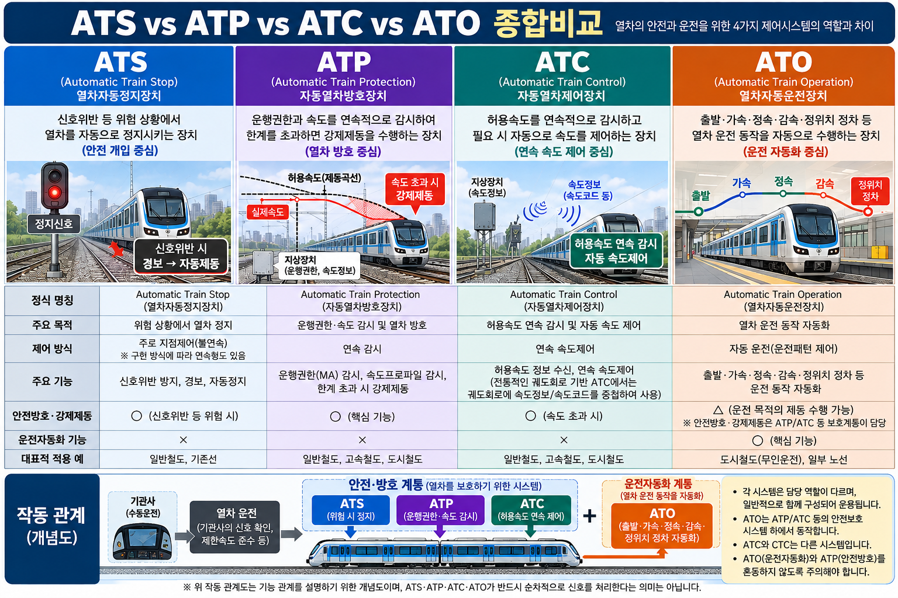

ATS · ATP · ATC · ATO 열차제어 시스템
§0 · 선행 용어
§1 · 열차제어시스템이 왜 필요한가
열차는 레일 위를 고속으로 운행하며 정차에 긴 제동거리가 필요하다. 기관사가 모든 신호를 실시간으로 확인하고 정확한 속도를 유지하는 것에는 한계가 있다. 특히 속도가 높아질수록 다음과 같은 위험이 증가한다.
- 정지신호를 인식했더라도 제동거리 부족으로 추월
- 허용속도를 초과한 상태에서 곡선 구간 진입
- 앞 열차와의 간격 미확보로 추돌
이러한 위험을 자동으로 감시·보호·제어하기 위해 열차제어시스템이 필요하다. ATS·ATP·ATC·ATO는 각각의 역할이 있으며, 크게 안전·방호 계통과 운전자동화 계통으로 구분하여 이해하는 것이 핵심이다.
- ATS (열차자동정지장치)
위험·신호위반 시 자동정지 개입 - ATC (열차자동제어장치)
허용속도 연속 감시·제어 - ATP (자동열차방호장치)
운행권한·속도 감시 및 강제제동
- ATO (열차자동운전장치)
출발·가속·정속·감속·정위치 정차 자동화 - ※ ATO의 운전한계·속도 감시는 ATP·ATC 등 안전·방호 계통이 별도 담당
ATS·ATP·ATC·ATO가 반드시 순차적으로 신호를 처리한다는 의미가 아니다.
각 시스템은 세대·구성·철도 종류에 따라 다르게 구축된다. 특정 구성에서 ATS·ATC·ATP·ATO가 함께 적용될 수도 있고, 일부만 사용될 수도 있다. 각 시스템의 역할과 핵심 차이점을 구분하는 것이 시험의 핵심이다.
§2 · ATS — 열차자동정지장치
운전자가 정지신호 등 안전조건을 위반할 때 자동으로 제동을 개입시키는 장치. 기관사가 신호를 확인하지 못하거나 조작이 늦어질 경우 차상장치가 자동으로 경보 및 제동을 적용한다.
- 지상자 통과 → 차상장치가 신호 정보 수신
- 경보 발생 → 기관사에게 정지신호 접근 경보
- 기관사가 일정 시간 내 응답하지 않으면 자동제동 적용
- 안전조건 위반 상태 지속 시 자동으로 열차 정지
- ATS의 목적 = 위험상황·신호위반 시 경보 및 자동정지
- 전형적으로 지점제어(불연속 제어) 중심 방식 — 지상자 위치에서 정보 수신이 기본
- 허용속도를 전 구간에서 연속적으로 감시·제어하지 않는다 (ATC와 구분 핵심)
- 특정 ATS 구현 방식의 세부 특성을 ATS 전체로 일반화하지 않는다
§3 · ATP — 자동열차방호장치
운행권한과 허용속도를 감시하여 과속·신호위반 등 위험 시 제동을 강제하는 자동열차방호 기능. 기관사의 의도와 관계없이 안전 한계를 넘는 순간 자동으로 개입한다.
- 속도 감시: 실제 운행속도와 허용속도를 지속 비교
- 운행권한 감시: 열차에 부여된 이동 한계(MA)를 초과하지 않도록 감시
- 안전방호·강제제동: 위반 감지 시 기관사 개입 없이 즉시 강제제동 적용
- 제동곡선 기반: 목표 정지 지점까지 안전하게 정지하기 위한 감속 기준 적용
- ATP = "방호(Protection)" 기능 — 자동운전과 다름
- 지상자·발리스(Balise) 등을 통해 지상 → 차상으로 정보 전달
- ATP ≠ 자동운전. ATO와 혼동 금지
- ATO가 자동운전을 수행하더라도 안전 방호 감시는 ATP 계열이 담당
- 07-10 Fail-Safe — ATP의 과속 시 강제제동은 Fail-Safe 원리 적용 사례
- 07-06 기본 궤도회로 — ATP 지상장치 구성요소 중 일부는 궤도회로와 연계
§4 · ATC — 열차자동제어장치
열차의 허용속도 등을 지속적으로 감시·제어하여 안전한 속도 운전을 지원하는 자동열차제어 방식. 차상장치가 허용속도를 지속적으로 파악하고, 초과 시 자동제동을 적용한다.
ATC 시스템에서는 지상의 신호기 대신 차내신호(운전실 표시기)에 속도 현시. 고속 운행 시 지상 신호기를 육안으로 확인하기 어려운 문제를 해결한다.
전통적인 궤도회로 기반 ATC에서는 궤도회로에 속도정보 또는 속도코드를 실어 차상으로 전달하는 방식이 사용된다. AF(가청주파수)궤도회로를 활용하면 다중 주파수로 속도코드를 전달할 수 있다.
※ ATC 전체가 반드시 궤도회로 속도코드 방식인 것은 아니다. 구현 방식은 세대·시스템에 따라 다를 수 있다. → 07-07 AF궤도회로 CROSS-REF
- ATS: 전형적으로 지점제어 중심 — 위험·신호위반 시 정지 개입
- ATC: 연속제어 — 운행 중 지속적으로 허용속도를 감시·제어하는 것이 핵심
- 07-07 무절연 AF궤도회로 — 전통적 ATC 속도코드 전달에 AF궤도회로가 활용됨
- 07-06 기본 궤도회로 — ATC 정보 흐름의 기반. 궤도회로 이해 선행 필요
§5 · ATO — 열차자동운전장치
정차·가속·감속 등 열차 운전 동작을 자동화하는 열차자동운전 기능. 기관사 없이 또는 최소 감시 하에 열차가 스스로 역간 운전을 수행한다.
- 자동 출발: 출입문 닫힘 확인 후 정거장 출발
- 가속: 목표 속도까지 자동 가속
- 정속 운전: 지정 속도 유지
- 감속: 다음 역 도착에 맞춰 자동 감속 (운전 목적의 제동 명령 포함)
- 정위치 정차: 승강문 위치에 정확히 정차
ATO는 운전 자동화를 담당하고, 안전 방호는 ATP·ATC 계열이 담당한다.
- ATO 운전제동: 감속·정위치 정차를 위해 ATO가 수행하는 정상적인 제동 명령. 운전 자동화의 일부.
- ATP 강제제동: 허용속도 초과·운행권한 위반 등 안전 한계를 넘을 때 ATO 명령을 무시하고 ATP가 강제로 적용하는 제동. 안전 방호의 핵심.
⚠ ATO ≠ ATP: ATO만으로 열차 안전 방호가 완성되지 않는다. 안전 방호는 ATP 계열이 별도로 담당한다.
§6 · ATS vs ATP vs ATC vs ATO 종합비교


| 항목 | ATS | ATP | ATC | ATO |
|---|---|---|---|---|
| 정식 명칭 | Automatic Train Stop 열차자동정지장치 |
Automatic Train Protection 자동열차방호장치 |
Automatic Train Control 열차자동제어장치 |
Automatic Train Operation 열차자동운전장치 |
| 핵심 목적 | 신호위반 시 정지 개입 |
과속·위반 위험 시 제동 강제 (방호) |
허용속도 연속 감시·제어 |
운전 동작 자동화 |
| 제어 방식 | 지점(불연속) 중심 |
연속 감시 | 연속 제어 | 자동 운전 |
| 속도 감시 | 제한적 | ○ (허용속도) | ○ (연속) | 간접적 (ATP에 의존) |
| 안전방호· 강제제동 |
○ | ○ (강제) | ○ | △ 운전 목적의 제동 수행 / 안전방호·강제제동은 ATP 등 보호계통 |
| 차내신호 | — | 시스템별 | ○ | 시스템별 |
| 자동운전 | — | — | — | ○ |
| 구분 핵심어 | 정지신호 위반·경보 |
방호 운행권한·MA |
제어 속도코드·차내신호 |
운전 가속·감속·정차 |
※ ○/—/△는 주된 기능 여부 표시. 실제 시스템은 구성·세대에 따라 다를 수 있음.
§7 · 전체 작동관계 및 CROSS-REF
ATO와 ATP의 계층 관계: ATO(자동운전)는 ATP(방호) 위에서 동작한다. ATO가 자동으로 가속·감속을 수행하는 동안에도 ATP는 허용속도·운행권한을 감시하며, 위반 감지 시 ATO 명령을 무시하고 강제제동을 적용한다. ATO의 운전 목적 제동과 ATP의 안전방호 강제제동은 별개다.
ATC와 궤도회로: 전통적인 궤도회로 기반 ATC에서는 열차 주행 중 궤도회로에 중첩된 속도코드를 차상장치가 지속 수신하는 방식으로 동작한다. 이는 07-07 AF궤도회로가 다중 주파수 신호를 전달하는 구조와 직접 연결된다. ATC 전체가 반드시 이 방식인 것은 아님에 주의.
- 07-06 기본 궤도회로 — ATC·ATP 지상장치의 열차위치 검지 기반
- 07-07 무절연 AF궤도회로 — 전통적 ATC 속도코드 전달 매체
- 07-08 연동장치·쇄정 — ATC/ATP 시스템과 연동장치 간 진로 안전 확인 관계
- 07-09 폐색시스템 — 고정폐색(ATC 연계)과 이동폐색(CBTC·ATP 기반) 비교
- 07-10 Fail-Safe — ATP 과속 시 강제제동이 Fail-Safe 원리 적용 사례
§8 · 시험 포인트
ATC = 허용속도 감시·제어를 연속적으로 수행 — 이것이 핵심 차이
ATP = 보호·감시·강제제동 / ATO = 운전 자동화
ATC = 속도 자동제어 / CTC = 관제실에서 원격 집중 제어
각각 독립적인 역할을 가진 시스템이며, 실제 구성은 세대·노선에 따라 다르다.
ATO = 운전자동화 계통 / ATP = 안전방호 계통
§9 · 관련 문제
"운전자가 정지신호 등 안전조건을 위반할 때 자동으로 제동을 개입시키는 열차자동정지 계열 장치이다."
- ① ATS
- ② CTC
- ③ ATO
- ④ 연동장치와 CTC의 관계
"열차의 허용속도 등을 지속적으로 감시·제어하여 안전한 속도 운전을 지원하는 자동열차제어 방식이다."
- ① ATC
- ② 속도프로파일
- ③ DMI
- ④ CTC
"운행권한과 허용속도를 감시하여 과속·신호위반 등 위험 시 제동을 강제하는 자동열차방호 기능이다."
- ① ATC
- ② ATP
- ③ 운행권한(Movement Authority)
- ④ ATP와 ATO의 관계
"정차·가속·감속 등 열차 운전 동작을 자동화하는 자동열차운전 기능이다."
- ① DMI
- ② 운행권한(Movement Authority)
- ③ ATO
- ④ ATS와 ATC의 차이
- ① 정차·가속·감속 등 열차 운전 동작을 자동화하는 자동열차운전 기능이다.
- ② CTC가 진로 명령을 내려도 실제 안전조건 확인과 충돌방지는 연동장치가 담당한다.
- ③ 구간별 허용속도와 제동곡선 등을 반영해 열차가 따라야 할 속도 기준을 나타낸다.
- ④ ATO가 자동운전을 수행하더라도 안전한 운행한계·속도 감시는 ATP 계열 보호기능이 담당한다.
- ① ATS는 열차의 허용속도를 운행 전 구간에서 연속적으로 감시·제어하는 장치이다.
- ② 열차가 안전하게 진행할 수 있도록 허용된 진로와 한계를 나타내는 정보이다.
- ③ 운전자가 정지신호 등 안전조건을 위반할 때 자동으로 제동을 개입시키는 열차자동정지 계열 장치이다.
- ④ 열차운행 현황·운행계획·지연 등을 종합적으로 관리하는 열차운행관리 시스템이다.
§10 · 정답 및 해설
운전자가 정지신호 등 안전조건을 위반할 때 자동으로 제동을 개입시키는 장치이다.
- ② CTC: 열차집중제어 — 관제실에서 여러 역 신호·진로를 원격 제어 (08-01 범위 밖)
- ③ ATO: 열차자동운전장치 — 정차·가속·감속 등 운전 동작 자동화 (전혀 다른 기능)
허용속도를 지속적으로 감시·제어. "지속적으로"가 ATS(지점제어 중심)와 구분되는 핵심어.
- ② 속도프로파일: 구간별 허용속도·제동곡선 기준 — ATC가 참조하는 기준이지 ATC 자체가 아님
- ④ CTC: 관제 시스템 — ATC와 이름 유사하나 전혀 다른 기능 (최빈출 함정)
운행권한(MA)과 허용속도를 감시하여 과속·신호위반 위험 시 제동을 강제하는 방호 기능.
- ① ATC: 허용속도 연속 감시·제어. "방호·강제제동"은 ATP의 핵심어
- ③ 운행권한(MA): ATP가 감시하는 대상. ATP 자체가 아님
정차·가속·감속 등 운전 동작 전반을 자동화. 자동운전이 핵심어.
- ① DMI: 운전자에게 허용속도·목표속도·운행권한 등 차상 운전정보를 표시하는 인터페이스
- ② 운행권한(MA): 진로 허용 범위 정보 — ATO가 활용하는 정보이지 ATO 자체가 아님
- ① ATO 정의는 맞으나, 이 문제는 "ATP와 ATO의 관계"를 묻는다
- ② CTC와 연동장치 관계 — 이 단원 범위 밖
- ③ 속도프로파일 설명 — ATP/ATO 관계와 무관
출처: signal-exam-data.ts · sig_124 (A+급)
- ① "열차의 허용속도를 운행 전 구간에서 연속적으로 감시·제어" → 이는 ATS가 아닌 ATC의 성격. ATS는 전형적으로 지점제어 중심이며 전 구간 연속 감시·제어를 핵심 기능으로 하지 않는다. → 오답
- ② 운행권한(MA) 설명 — ATS와 무관
- ④ TMS(열차운행관리시스템) 설명
출처: signal-exam-data.ts · sig_106 (S급) [원자료 복수정답 가능성 → 학습용 기술보정]
수정이력: sig_106 복수정답 가능성 기술보정 / ATS·ATP·ATC·ATO 직렬 흐름 제거 / 안전·방호 vs 운전자동화 기능축 분리 / ATO 운전제동 vs 안전방호제동 구분 명확화 / ATC 궤도회로 기반 표현 범위 한정 / ATS 지점제어 일반화 완화 / VIS-08A img 태그 연결 / YouTube 재생구조 4.html 표준(썸네일→클릭→nocookie iframe)으로 교체(v1.5)